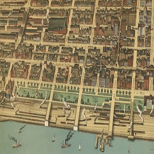

This project restores Nell Nelson's instrumental work exposing cruel unsanitary working conditions in 19th-century Chicago’s manufacturing industry. A pioneer of investigative reporting, Nelson published the series, "City Slave Girls," in The Chicago Times. Focusing on the ill-effects of industrialization, she exposed the mistreatment of the women, children, and the impoverished.

Mapping
Navigate late nineteenth century Chicago and explore the companies exposed in the series.

Reading
Explore Nell Nelson in her own words.